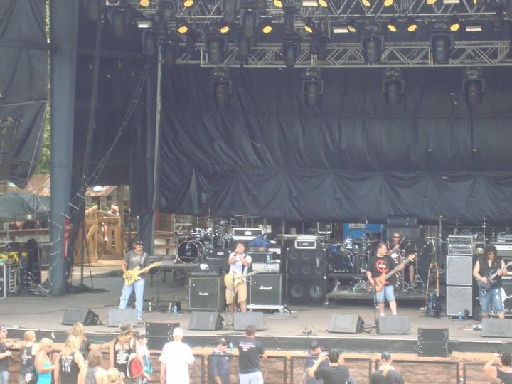

ROCK THAT REFUSES
TO STAY BURIED
Dark melodies. Heavy guitars. Songs forged from struggle, redemption, faith, and the fight to rise again.
ENTER THE SOUNDDark melodies. Heavy guitars. Songs forged from struggle, redemption, faith, and the fight to rise again.
ENTER THE SOUNDOriginal songs forged from struggle, redemption, faith, and the fight to rise again.
New music from Jonny Bender. Stay tuned for releases, videos, and stories behind the songs.
Completey written, performend and recorded by JB
For Bender, live music isn’t just about playing songs—it’s about creating a shared experience with the room. Armed with a solo acoustic guitar and a passion for great melodies, Bender brings high-energy acoustic renditions of rock and pop favorites from the 90s through today. From nostalgic throwbacks to current chart-toppers, every setlist is built to keep listeners singing along, tapping their feet, and feeling right at home. The Live Experience What sets Bender apart on stage is a genuine love for audience interaction. There’s no strict wall between the performer and the crowd; every show is tailored to the energy of the room, turning a simple performance into a fun, interactive event. "If there’s an audience ready to listen, I’m ready to play." Any Stage, Anywhere No crowd is too intimate, and no stage is too large. Bender approaches every setting with the exact same passion—whether it’s: • Cozy coffee shops and local acoustic rooms • Vibrant bars, breweries, and private events • Festival stages in front of thousands of fans Wherever there’s a spot to plug in and play, Bender delivers an authentic, high-energy acoustic performance that leaves a lasting impression long after the final chord.
📧 Email me: jonbndr@gmail.com
FacebookMoments from the journey. The stories behind the songs.



👀 Visitors: Loading...